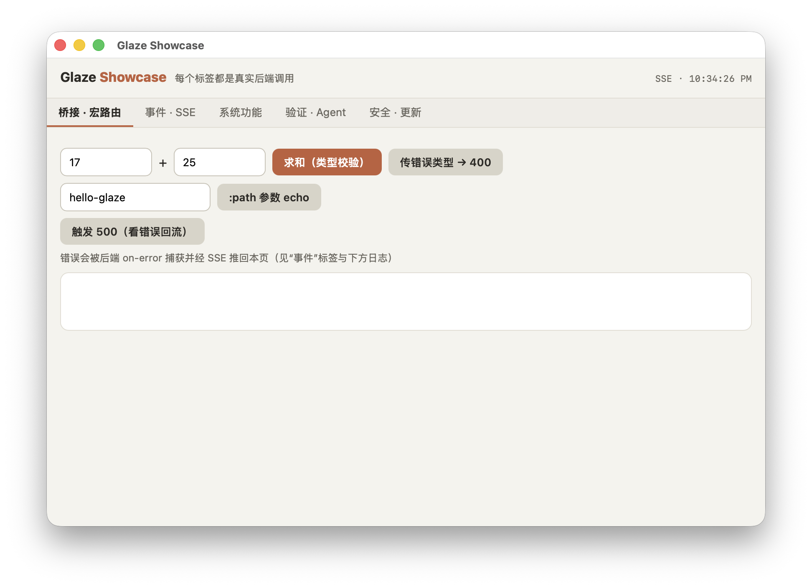

Glaze is a Tauri-like framework for Racket: your app logic runs in Racket, your UI is HTML/CSS/JS, and everything ships inside a native desktop window backed by the OS WebView.

Macros, contracts, pattern matching — your domain logic lives in a real programming language.
Tailwind, Svelte, React, or plain HTML/CSS/JS — the UI is just what the browser is already good at.
The page calls Racket with plain fetch("/api/...") — no IPC ceremony.
If the native WebView runtime is missing, startup fails with actionable guidance — never a silent browser-tab fallback.
webview-title, webview-url and webview-capture! are built in — CI can see what the window shows.
All three WebView backends pass the same real-window e2e in CI.
with a different native story: pure FFI, no Rust toolchain, tiny binaries, HTTP-JSON instead of invoke() IPC.
| Glaze | Tauri | Electron | |
|---|---|---|---|
| Backend language | Racket | Rust | JS / Node |
| Native toolchain needed | none (pure FFI) | Rust + cargo | none |
| Binary size | tiny | small | 100 MB+ |
| Frontend → backend | HTTP JSON routes (fetch) | invoke() IPC | Node APIs |
| WebView | WebView2 / WKWebView / WebKitGTK | system WebView | bundled Chromium |
| Agent UI verification | built-in | via WebDriver | via CDP |